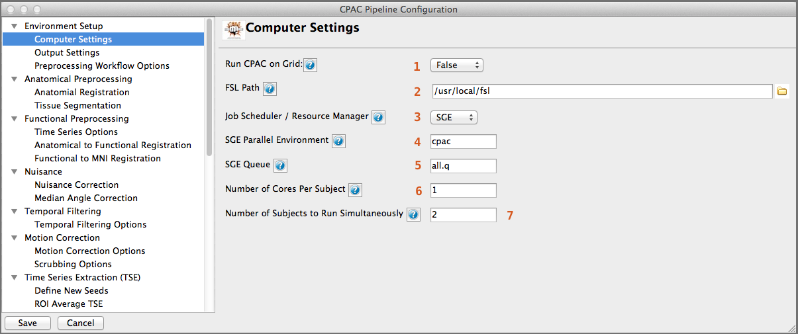

Computer Settings¶

- Run CPAC on a Cluster/Grid - [False, True]: Select False if you intend to run CPAC on a single machine. If set to True, CPAC will attempt to submit jobs through the job scheduler / resource manager selected below.
- FSL Path - [path]: Full path to the FSL version to be used by CPAC. If you have specified an FSL path in your .bashrc file, this path will be set automatically.
- Job Scheduler / Resource Manager - [SGE, PBS]: Sun Grid Engine (SGE) or Portable Batch System (PBS). Only applies if you are running on a grid or compute cluster.
- SGE Parallel Environment - [text]: SGE Parallel Environment to use when running CPAC. Only applies when you are running on a grid or compute cluster using SGE.
- SGE Queue - [text]: SGE Queue to use when running CPAC. Only applies when you are running on a grid or compute cluster using SGE.
- Number of Cores Per Subject - [integer]: Number of cores (on a single machine) or slots on a node (cluster/grid) per subject. Slots are cores on a cluster/grid node. ‘Number of Cores Per Subject’ multiplied by ‘Number of Subjects to Run Simultaneously’ multiplied by ‘Number of Cores for Anatomical Registration (ANTS)’ must not be greater than the total number of cores.
- Number of Subjects to Run Simultaneously - [integer]: This number depends on computing resources.
- Number of Cores for Anatomical Registration (ANTS) - [integer]: This number depends on computing resources.
Configuration Without the GUI¶
The following key/value pairs must be defined in your pipeline configuration YAML for C-PAC to run:
Key Description Potential Values runOnGrid Run using a Grid Resource Manager (such as Sun Grid Engine or HTCondor)? True,False FSLDIR The path to the FSL directory on your server/workstation. A string that is a path (e.g., /usr/share/fsl/5.0) resourceManager The Grid Resource Manager to use (if runOnGrid is set to True). SGE,PBS parallelEnvironment SGE Parallel Environment to use when running CPAC (if using SGE). A string that is the Parallel Environment name. queue SGE Queue to use when running CPAC (if using SGE). A string that is the Queue name. numCoresPerSubject Number of cores (on a single machine) or slots on a node (cluster/grid) per subject. Slots are cores on a cluster/grid node. An integer. numSubjectsAtOnce The number of subjects to run at once. An integer. num_ants_threads The number of threads to allocate to ANTs. An integer.
The box below contains an example of what these parameters might look like when defined in the YAML:
runOnGrid : False
FSLDIR : /usr/share/fsl/5.0
resourceManager : SGE
parallelEnvironment : cpac
queue : all.q
numCoresPerSubject : 1
numSubjectsAtOnce : 1
num_ants_threads : 1